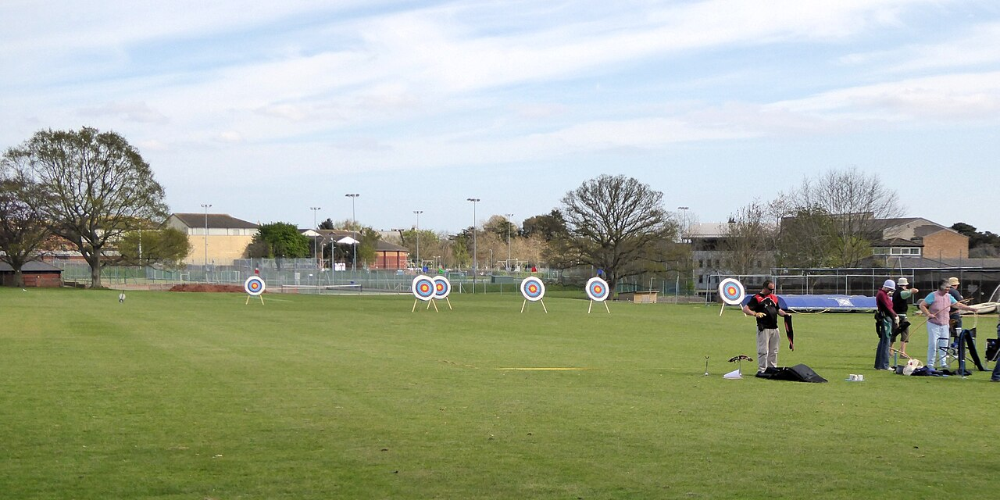

Archery Teaches the Quietest Skill in Sports
What is the loudest moment in school sports? A buzzer, a whistle, a student section in full voice. Now consider the opposite: a gymnasium where the loudest sound is a whistle used for safety commands, and after it, near silence — forty students standing on a line, bows drawn, each one trying to be perfectly still. That is school archery, and the stillness is not a side effect. The stillness is the sport.
Ten metres, then fifteen
School archery runs on a simple, strict format. Archers shoot from ten metres, then from fifteen. Five arrows at a time — an "end" — then everyone walks forward together to score and pull arrows, and the line resets. Every arrow is worth up to ten points, and the target face, eighty centimetres across with its white, black, blue, red and gold rings, is the same one used by beginners in a school gym and by students shooting for a national title. There is no moving target, no opponent in your face, no clock except the whistle. The difficulty is entirely in repeating one motion — stance, draw, anchor, aim, release, follow-through — until it stops feeling like six things and starts feeling like one.

The program behind the line
Most of these students met archery in PE class, through the National Archery in the Schools Program — NASP — which teaches international-style target archery as part of the school day. The scale of it surprises people. In the 2024–25 school year, archery was taught in more than 10,000 schools, reaching roughly 1.3 million students, and the program's eastern national tournament in Louisville drew about 15,000 archers in 2025 — by some measures the largest archery tournament in the world. Every one of them used the same bow: a single standardized model with no sights and no attachments, chosen so that skill is the only variable. The sport is older than every other one in the building, of course — the sweep of archery through history runs from hunting and warfare to the modern Olympic target — but the school version is deliberately plain. One bow, one target, one distance at a time.
The kid it finds
Ask archery coaches who their sport is for and they tend to give the same answer: the student the other sports missed. Archery does not reward height, top-end speed or early physical maturity. It rewards attention. Teachers who run the program say the same thing researchers keep finding — that the routines of breathing, aiming and letting down a shot you don't like build exactly the habits described in guides to focus and stress management: slow the breath, narrow the attention, accept the last result and reset. Students who struggle to sit still in a classroom will stand motionless on a shooting line for an hour, because the stillness has a purpose they can see downrange. The scorecard helps too. Improvement in archery is brutally legible — your groups tighten, your average climbs by twos and threes — and a beginner can watch herself get better in a way that a bench player in a team sport often can't.
Where the line leads
For a few students, the school range is the start of a long road: state tournaments, national events, and for the very best, the world of Team USA archers, where the distances stretch to seventy metres and the target face looks like a coin. For most, it ends with school — a semester or a few seasons of a skill they can pick up again at any age, at any range, for the rest of their lives. That may be the quiet sport's real argument. Almost nobody plays their last school basketball game and then keeps playing at forty. Archers do it all the time. The line is patient. It waits.